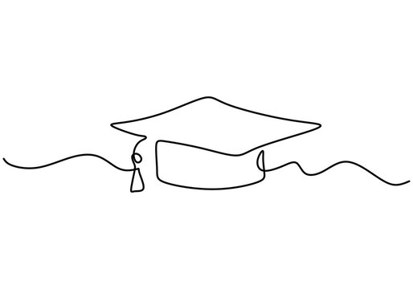
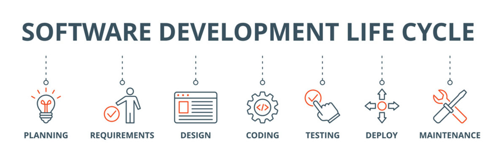

Intro
Hello! I'm Yasoda Krishna Reddy Annapureddy, a software engineer with a passion for creating impactful digital solutions through cloud computing, DevOps, and full-stack development. My journey began with a profound interest in technology and its potential to solve real-world problems. Armed with a Master’s degree in Computer Science from Illinois State University and a Bachelor’s in Technology specialized in AI from KL University, I have navigated through various facets of technology to mold my career.
Over the past three years, I have been fortunate to contribute to and lead projects that span across scalable web applications, RESTful APIs, and microservices architecture, with a particular focus on Java/J2EE and cloud platforms like AWS and Azure. My experience has not just been about coding; it’s been a journey of continuous learning, team collaboration, and pushing the boundaries of technology to achieve efficiency and innovation. I'm deeply passionate about leveraging my skills to drive projects that have a meaningful impact, and I'm always on the lookout for new challenges and opportunities to grow.
When I'm not coding, I enjoy mentoring aspiring developers, exploring the latest in technology trends, and contributing to open-source projects. My aim is to not just grow as a professional but to contribute to the community that has been a significant part of my journey. Let’s connect and explore how we can work together to turn innovative ideas into reality.
Academics

My academic journey is a cornerstone of my professional development, providing me with a solid foundation in computer science and a specialization in AI. This section details my educational background, emphasizing the skills and knowledge I've gained through rigorous academic pursuits.
Master of Science in Computer Science
Illinois State University, Normal, Illinois, United States
GPA: 4.0 / 4.0
My graduate studies centered around advanced computing concepts, specializing in software development, cloud computing, and data architecture. I engaged in comprehensive research and practical projects that have significantly shaped my problem-solving skills and technical acumen.
Bachelor of Technology in Computer Science
KL University, Vijayawada, Andhra Pradesh, India
CGPA: 9.2 / 10
My undergraduate education laid the groundwork for my career in technology. Specializing in Artificial Intelligence, I delved into wed development, machine learning, and database management, gaining essential skills that drive my approach to software engineering and web development.
These academic achievements are not just testaments to my dedication and hard work but also reflect my continuous effort to stay at the forefront of technological innovation. My education has equipped me with a robust skill set, enabling me to contribute effectively to the dynamic field of software engineering.
Experience

Throughout my career, I have embraced opportunities that allowed me to grow as a software engineer, from full-stack development to cloud computing and DevOps. Below is an overview of my professional experience, showcasing my contributions and the skills I've honed across different roles.
Full Stack Developer at IQIT Solutions, Sugarland, TX, USA
Jan ‘24 – Present
At IQIT Solutions, I collaborate with the Web and Interactive Communications team to design, develop, and maintain robust, secure, scalable Spring Boot web applications. My work includes architecting RESTful web services and Microservices using Spring Boot, and deploying and managing applications on AWS.
Teaching Assistant at Illinois State University, Normal, USA
Aug ‘22 – Dec ‘23
In this role, I facilitated bi-weekly tutorial sessions for over 100 students, enhancing their mastery of core programming concepts and problem-solving strategies in Java. This position allowed me to contribute to the academic success of students, leading to a significant improvement in their assignment scores.
NCR Corporation, Hyderabad, India
Feb ’21 – Aug ‘22
I orchestrated the cloud migration of the POS and Fuel system to a microservices-based architecture on AWS, utilizing Docker for containerized environments. My efforts unified major components into a scalable infrastructure, enhancing transaction processing speed and system reliability.
Each position I've held has equipped me with a unique set of skills and experiences, enabling me to contribute effectively to my teams and projects. My journey is a testament to my commitment to continuous learning and improvement, and my ambition to drive technological innovation forward.
Resume
Projects

My journey in software development is punctuated with projects that encapsulate the breadth and depth of my expertise. From creating scalable web applications to architecting cloud solutions, each project represents a step forward in my relentless pursuit of technological excellence. Below, you'll find highlights of my work, each showcasing my ability to tackle complex challenges with innovative solutions.
ISU CODE - Online Learning Portal
Developed for Illinois State University, this Angular and Spring framework-based portal facilitates an engaging learning environment for students and faculty. It's a testament to my ability to enhance application performance, ensuring a platform capable of supporting millions of users with a keen focus on security, reliability, and scalability.
Temporary Housing Assistance
This microservices-structured web platform streamlines the search for temporary housing, enhancing user satisfaction through efficient property searches. It showcases my skills in implementing robust security measures and employing design patterns for improved maintenance and scalability.
Image Enhancement by Histogram Equalization
A project that demonstrates my versatility in image processing techniques, applying histogram equalization across various color spaces to significantly improve image clarity and contrast. It's a showcase of my analytical skills and my ability to enhance digital assets for better visual quality.
These projects are a mere glimpse into my professional portfolio. Each project has not only contributed to my growth as a software engineer but has also helped in solving real-world problems. I invite you to dive deeper into these projects to understand the scope and impact of my work.
Contact
If you're interested in collaborating or have any questions, feel free to reach out to me. I'm always open to discussing new projects, creative ideas, or opportunities to be part of an event. Below are the best ways to get in touch with me:
Name: Yasoda Krishna Reddy Annapureddy
Email: yasodaakrishna@gmail.com
Phone: +1 (309)-750-9199
LinkedIn
GitHub
Skills

My technical repertoire spans various domains, underlining my holistic approach to software development. From conceptualization with frontend technologies to backend system design, and embracing DevOps for seamless operations, here’s a structured insight into my skill set:
Languages
Java, Python, C - Versatile in multiple programming languages, with a strong focus on Java for its robustness in building enterprise solutions.
Frontend
JavaScript, HTML5, CSS3, AJAX, jQuery - Proficient in crafting intuitive and responsive user interfaces, enriching user experience across web applications.
Backend
Java/J2EE Technologies: JDBC, EJB, Web Services (RESTful, SOAP), Hibernate, Struts, Spring, JPA - Expertise in developing scalable and secure backend systems, employing a range of Java technologies for comprehensive enterprise applications.
DevOps
Docker, Kubernetes, Terraform, AWS, Jenkins, CI/CD pipelines - Skilled in automating and optimizing development workflows and infrastructure, leveraging containerization, orchestration, and cloud services for efficient deployment and scaling.
Tools
Git, SVN, Postman, JIRA - Utilizing a suite of tools for version control, API testing, and project management to enhance collaboration and ensure project deliverables.
Testing
JUnit, Mockito - Implementing rigorous testing methodologies to ensure code quality and reliability, focusing on unit and integration testing frameworks for Java applications.
Embarking on a journey of continuous learning, I have equipped myself with a diverse skill set, enabling me to navigate and contribute to complex software development projects with confidence and creativity.